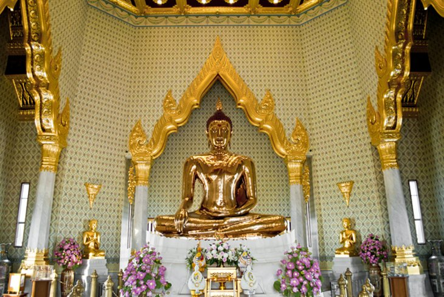
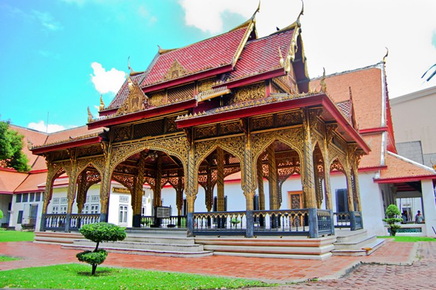
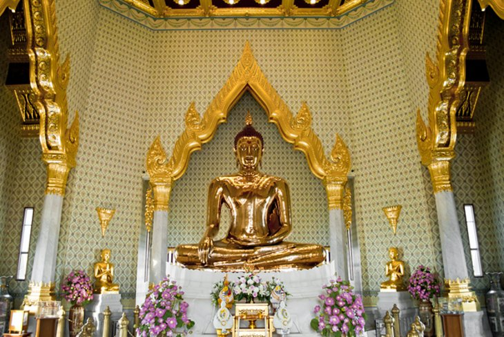
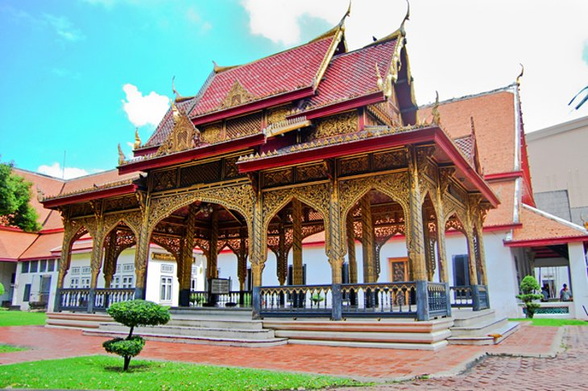
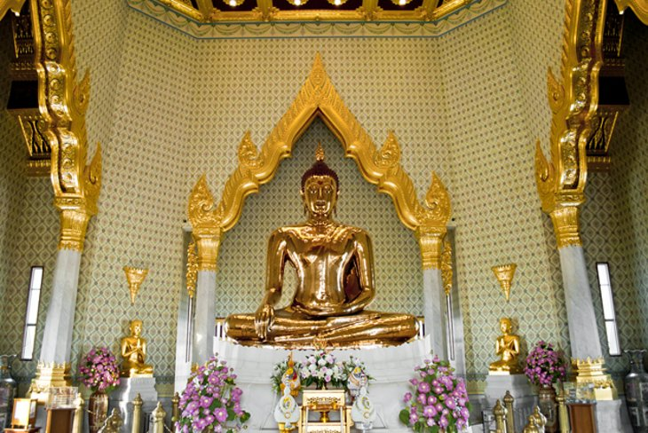
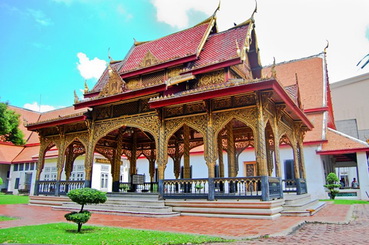
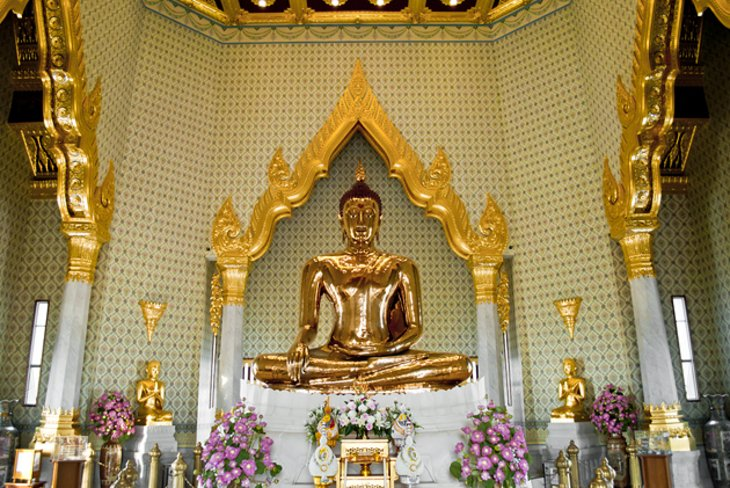
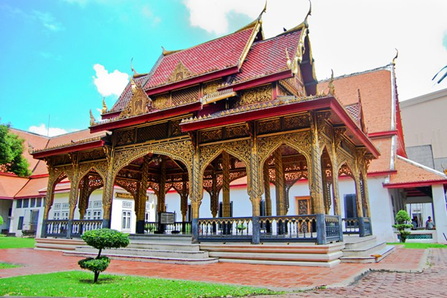

If you only visit one major historical tourist attraction in Bangkok, this should be the one. The royal compound lives up to its name, with spectacular structures that would put the most decadent modern monarchs to shame. It's also the home of Wat Phra Kaeo, which houses the Jade (or Emerald) Buddha.
Sheer luck (or lack thereof) makes this attraction special. During the 1950s, the East Asiatic Company purchased the land around the temple. A condition of the sale was the removal of a plaster statue of Buddha, but the statue proved too heavy for the crane being used. The cable parted and the figure was dropped, being left overnight where it fell. It happened to be in the rainy season, and when next morning some monks walked past, they noticed a glint of gold shining through the plaster. The coating was removed, revealing a 3.5 m Buddha cast from 5.5 tons of solid gold.
History buffs in particular will want to devote at least half a sightseeing day to the national museum, if not more. Until the mid-1970s, this was Thailand's only museum, which explains why its collection is so big. Fortunately, just about every exhibit is labeled in Thai and English and guided tours are also offered in English, so you won't miss out on any of the country's fascinating ancient and contemporary history.